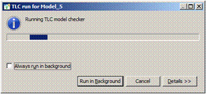

Contents Validating a Model Model Checking a Model TLC Model Checker Preferences If Something Crashes How TLC is Run The TLC Console View
You run the TLC model checker by clicking on the  button.
This button
appears at the top of each model editor page. Before running TLC on the model,
the Toolbox first validates the model, checking it for errors.
Clicking on the button causes the Toobox
to validate the model without
running TLC on it.
button.
This button
appears at the top of each model editor page. Before running TLC on the model,
the Toolbox first validates the model, checking it for errors.
Clicking on the button causes the Toobox
to validate the model without
running TLC on it.
The Toolbox does some validation of the model as you edit it. If that validation finds no
errors, clicking on validate ( ) or
run (  ) checks for other errors.
The Toolbox reports any errors in the model that it finds
by placing error balloons like this
) checks for other errors.
The Toolbox reports any errors in the model that it finds
by placing error balloons like this
 near the part of the model containing
the error. Moving the mouse cursor on top of an error balloon will raise a message
explaining the error. The Toolbox also puts an Errors Detected field at
the top of the page. Moving the mouse cursor on top of it raises all the error
messages for the page.
near the part of the model containing
the error. Moving the mouse cursor on top of an error balloon will raise a message
explaining the error. The Toolbox also puts an Errors Detected field at
the top of the page. Moving the mouse cursor on top of it raises all the error
messages for the page.
Currently, the Toolbox reports some model errors as being parsing errors in a
module named MC . See the section
How TLC is Run below to find out how to interpret
such an error message.
Clicking on run will cause the Toolbox to validate the model and, if it finds no errors, to run TLC on the model. The Toolbox shows the following dialog while TLC is running:

You can view the progress of the run on the model editor's Model Checking Results Page. That page is automatically displayed when TLC starts running.
If TLC finds an error, it stops and the Toolbox raises the TLC Errors View. (If you close the view, you can reopen it from the TLC Model Checker menu.) This view consists of the following two sections. (The relative sizes of those two sections can be changed by moving the cursor between them until it changes to an up-and-down arrow and then clicking and dragging.)
 near
the part of the model containing that invariant or property. Otherwise, the error probably
occurred because TLC could not evaluate an expression.
If you're lucky, the error message will
contain the location of that expression. If not, you'll have to figure it out from
what TLC complained that it was unable to do. If the message indicates that the error
occurs in a module named
near
the part of the model containing that invariant or property. Otherwise, the error probably
occurred because TLC could not evaluate an expression.
If you're lucky, the error message will
contain the location of that expression. If not, you'll have to figure it out from
what TLC complained that it was unable to do. If the message indicates that the error
occurs in a module named MC , see the section
How TLC is Run below.
This section contains two subsections: an error trace viewer and an expression view box. (The relative sizes of these subsections can also be changed by dragging the boundary between them.) The error trace viewer shows a structured view of the error trace produced by TLC. The view box shows the TLA+ version of the expression selected in the error trace. (It is ordinary text that can be copied and pasted elsewhere.)
The error trace consists of a sequence of states, where a state is a TLA+ expression that describes the values of the variables. The trace viewer provides a tree-structured view of the state, allowing you to examine the value of each variable and of each subexpression of that value. (Left-click on the + and - symbols to expand and hide subexpressions.) This is helpful in viewing complex values.
The trace viewer uses colors to indicate changes in the values of variables and in the values of their subexpressions from one state to the next. The color code is:
 Value added in this state.
Value added in this state. Value removed from the next state.
Value removed from the next state.The top line of a state's display in the error trace gives the location of the sub-action of the next-state relation that generated the state (except for the first state, which is generated by the initial predicate). Double-clicking on that line takes you to the indicated location.
The Toolbox's Preferences Menu allows you to select the following:
Controls whether or not the TLC Errors View is automatically popped up when running TLC produces an error. You will almost certainly want to use the default, which is to pop up the view.
A model is an object that is edited with a model editor. When the model is modified,
an asterisk appears in the model editor's tab, and the model can be saved by
typing Ctl+S. This option allows you to choose whether or not
the Toolbox should validate the model when it is saved.
The model is automatically saved when you run or validate it, so there you will
probably have no reason to save it explicitly.
This is the value to which the Maximum JVM heap size parameter of a new model is set. See the description of that parameter in the How to run? section of the model editor's Overview Page help page.
If TLC crashes (a very rare occurrence), or if the Toolbox or your computer crashes and
you restart the Toolbox, you could find the Toolbox in a state in which it says that
TLC has crashed. In that case, you will see a Repair button at the top right
of the model editor. Click on it. Instead of saying that TLC has crashed,
the Toolbox might say that
TLC is still running even though it's not. If that happens, open the
Spec Explorer (described on the Manipulating Specs help page),
click on the + next to the open spec, right-click on the model in question, and
select the Repair option. This should fix the problem.
If you stop the Toolbox in some abnormal way while it is running TLC--for example, by using an operating system tool to kill its process--you may leave TLC running as a disembodied process. In that case, you should kill the TLC process. Otherwise, strange things will happen if you restart the Toolbox and try to run TLC from it on the model.
The Toolbox runs TLC on a module named MC that it constructs
from the model. It writes the module file MC.tla and
the TLC configuration file MC.cfg when validating
the model (when you click on either run or validate).
If the spec is named SpecName
and the model is named ModName , then these two
files are written in the subfolder SpecName.toolbox/ModName .
At the same time that it writes those files, the Toolbox also writes into the same folder a copy of each of the spec's module files. These allow you to see the version of the spec on which TLC was run, even after you have modified the spec. (You cannot yet view those copies from the Toolbox.)
It is a sad fact of life that most computer programs, including the Toolbox, have bugs. A Toolbox bug may cause TLC to stop running without either indicating that it succeeded or reporting an error. (You know that the TLC run succeeded if the General section of the Model Checking Results Page says that TLC is not running and the top entry of its Statistics section's State space progress table shows a queue size of 0.) If that page's Progress Output section doesn't explain what happened, the place to look next is the Toolbox's TLC Console View. You can open that view from the Toolbox's TLC Model Checker menu.
The TLC Console View contains all the output that TLC has produced when running this
model. (You can clear the console with the view's
 botton.) However, each TLC output message
appears between pairs of lines such as:
botton.) However, each TLC output message
appears between pairs of lines such as:
@!@!@STARTMSG 2200:0 @!@!@ @!@!@ENDMSG 2200 @!@!@
We hope that Toolbox bugs will soon become sufficiently rare that there will be no need for the TLC Console View. At that time, the view will be removed. You can help make that happen by reporting problems.